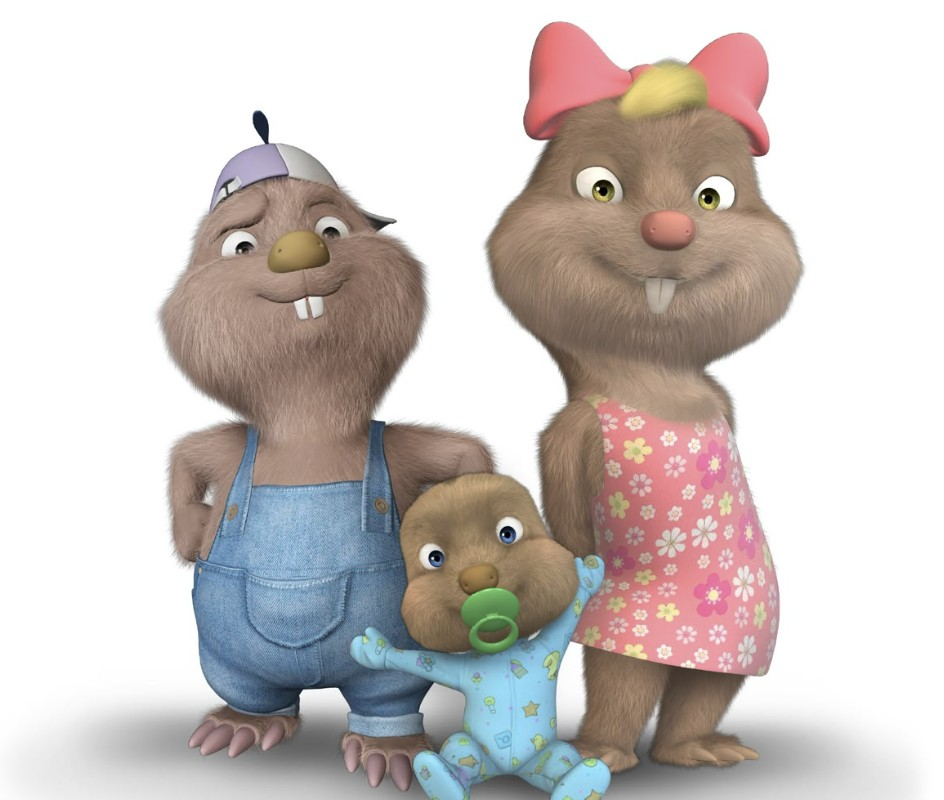

Köstebekgiller
Köstebekgiller, 16 Eylül 2010 tarihinde TRT Çocuk'ta yayınlanmaya başlayan, Türkiye'de gerçek ile animasyon karakterlerin bir arada olduğu ilk dizi projesidir. Macera, komedi, aile ve fantastik türde olan dizi, bir köstebek ailesinin başına gelen heyecanlı olayları konu edinmektedir.
İnsanlar ve hayvanlar arasında gerçekleşen etkileşimleri eğlenceli bir şekilde anlatan Köstebekgiller, çocuklara dostluk, dayanışma ve aile değerlerini öğretmeyi amaçlar.
Sizler de bu farklı ve macera dolu çizgi filmi çocuklarınızla birlikte keyifle izleyebilirsiniz.